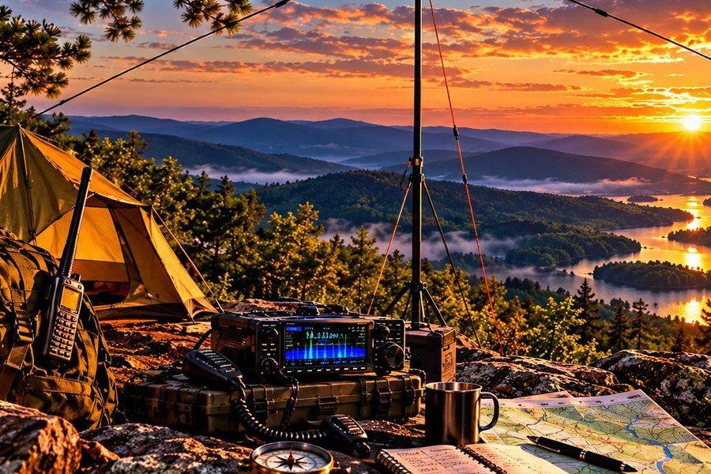

KPC FIELD TOOL
ANTENNA CALCULATOR
Starting wire lengths for portable dipoles, linked dipoles, end-fed half-waves and quarter-wave verticals, whip settings for 17-ft and 25-ft telescoping verticals, plus how much signal your coax eats before it reaches the antenna.

More calculators: delta & full-wave loops · doublet & ladder-line feeder · J-pole, Slim Jim & yagi · transformer builds · loading coil (short verticals) · harmonics & multiband wire
Read: 17-Foot vs. 25-Foot Whips →
See the pattern, SWR & coax loss →
Radials: how many & how long →
Loading coil calculator (homebrew coils) →
Harmonics Planner: one wire on many bands, random-wire lengths & clean signals →
Short field guides that go with these numbers:
Which antenna is right for me? (beginner)
Build your first dipole (beginner)
Linked dipoles (intermediate)
Tap the bands your linked dipole should cover (it uses the wire adjustment above). Highest band is built and tuned first.
Measure each leg from the center insulator to the middle of the link, and add a few inches at every link and end for connector loops and trimming. Set both legs alike. Start long and trim while watching SWR.
Matched-line loss from typical published figures (approximate). High SWR on the coax adds more loss.
Non-resonant end-fed wires used with a 9:1 unun and a tuner. These commonly published lengths avoid a half-wave on the popular bands — good starting points, not guarantees:
Run a counterpoise (17–25 ft is common) and use a tuner. Your height, ground and layout change what works best.
Center-fed wires that cover many bands with a tuner. Ladder line keeps the loss low even at high SWR.
| ANTENNA | WIRE | FEEDLINE | BANDS |
|---|---|---|---|
| 88 ft doublet | 2 × 44 ft | Ladder line to a tuner | 80–10 m |
| 44 ft doublet | 2 × 22 ft | Ladder line to a tuner | 40–10 m (80 m with a good tuner) |
| 135 ft doublet | 2 × 67.5 ft | Ladder line to a tuner | 160–10 m |
| G5RV | 102 ft | ~30.5 ft of 450 Ω window line, then coax | 20 m without a tuner; others with one |
| G5RV Jr | 51 ft | ~15.3 ft of window line, then coax | 40–10 m with a tuner |
| ZS6BKW | 93.5 ft | ~40–42 ft of 450 Ω window line, then coax | 40/20/17/12/10 m often under 2:1 |
Copper or aluminum (velocity factor 0.96). Feed points are starting spots: slide them for the lowest SWR. Cut long and trim.
Full VHF/UHF calculator: Slim Jim from ladder line, roll-up J-pole, yagi →
Full-wave loop and delta side are in the cards at the top and the table below. A delta needs a ¼-wave 75 Ω matching section or a 2:1.
A Loop on Ground is about 15 ft per side (60 ft of wire) on the grass, fed with a 3:9 turn transformer. It hears through low-band noise.
All Bands At A Glance
| BAND | FREQ | DIPOLE TOTAL | EACH DIPOLE LEG | EFHW WIRE | ¼-WAVE VERTICAL | FULL-WAVE LOOP |
|---|